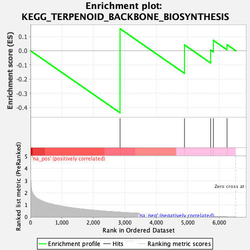

| | | Dataset | braak_p_ranked_Exc35_ADonly_collapsed |
| Phenotype | NoPhenotypeAvailable |
| Upregulated in class | na_neg |
| GeneSet | KEGG_TERPENOID_BACKBONE_BIOSYNTHESIS |
| Enrichment Score (ES) | -0.43661755 |
| Normalized Enrichment Score (NES) | -1.007578 |
| Nominal p-value | 0.4176737 |
| FDR q-value | 0.7666959 |
| FWER p-Value | 0.8083 |
Table: GSEA Results Summary

Fig 1: Enrichment plot: KEGG_TERPENOID_BACKBONE_BIOSYNTHESIS
Profile of the Running ES Score & Positions of GeneSet Members on the Rank Ordered List
| SYMBOL | TITLE | RANK IN GENE LIST | RANK METRIC SCORE | RUNNING ES | CORE ENRICHMENT | | 1 | PDSS2 | decaprenyl diphosphate synthase subunit 2 [Source:HGNC Symbol;Acc:HGNC:23041] | 2845 | 0.399 | 0.1548 | Yes |
| 2 | IDI1 | isopentenyl-diphosphate delta isomerase 1 [Source:HGNC Symbol;Acc:HGNC:5387] | 4892 | 0.135 | 0.0408 | No |
| 3 | HMGCR | 3-hydroxy-3-methylglutaryl-CoA reductase [Source:HGNC Symbol;Acc:HGNC:5006] | 5723 | 0.062 | 0.0049 | No |
| 4 | HMGCS1 | 3-hydroxy-3-methylglutaryl-CoA synthase 1 [Source:HGNC Symbol;Acc:HGNC:5007] | 5811 | 0.055 | 0.0729 | No |
| 5 | PMVK | phosphomevalonate kinase [Source:HGNC Symbol;Acc:HGNC:9141] | 6243 | 0.024 | 0.0425 | No |
Table: GSEA details [plain text format]
Fig 2: KEGG_TERPENOID_BACKBONE_BIOSYNTHESIS: Random ES distribution
Gene set null distribution of ES for KEGG_TERPENOID_BACKBONE_BIOSYNTHESIS